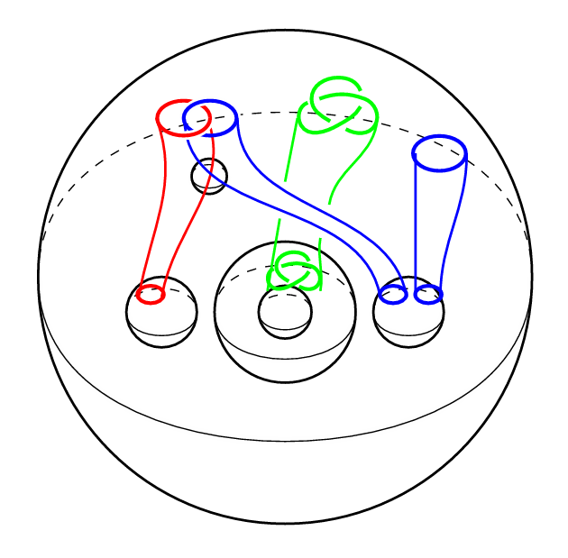
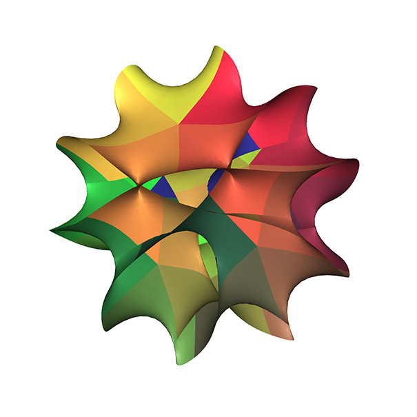
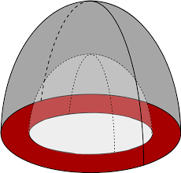
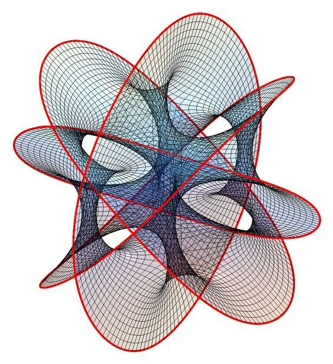
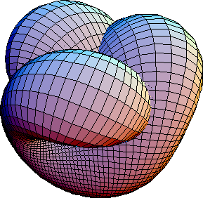
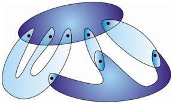

Hi, I am Amey (Aa+May+Yeah) Joshi. I am currently a PhD candidate at Michigan State University, co-advised by Matthew Hedden and Matthew Stoffregen. My dissertation lies at the intersection of low-dimensional topology, TQFTs, and algebraic techniques. More precisely, I work on Skein Lasagna modules and their applications to four-manifold theory. I am also working on quantum error correction, and specifically on how topological techniques can be applied to construct efficient quantum codes.
Previously, I completed a BS-MS dual degree in Mathematics from IISER Pune. My MS thesis, completed under Prof. B. Doug Park and Prof. Mainak Poddar, concerned abelian branched covers of symplectic four-manifolds, and was published in Advances in Geometry.
You can find my MathSciNet profile here. Outside of mathematics, I enjoy acrylic painting, football/soccer, and playing the harmonica. I am also interested in the history of mathematics — here is a presentation I gave to school students on the history of art, cartography, and their relationship to mathematics.
Research areas: Skein Lasagna Modules, Low-Dimensional Topology, TQFTs, Quantum Error Correction
Math subject GPA: 9.6/10

In this project, we show that under certain conditions, a spectral sequence of TQFTs gives rise to a corresponding spectral sequence of Lasagna modules. The paper reformulates a previously known setup for Lasagna modules into a more algebraically tractable framework, and establishes key properties of this spectral sequence construction. A preprint of the manuscript can be found here.
A data science project completed as part of the Erdős Institute Data Science Boot Camp (Summer 2026), with Abhishek Koparde, Sabarenath Jayaprakash, and Vineeth Krishna Talasila. Official flaring volumes reported to the Texas Railroad Commission suffer from a 1 to 2 month lag. Using VIIRS satellite radiant heat as an exogenous regressor, our ARIMAX(1,1,1) model achieves 68.5% directional accuracy in nowcasting flaring volumes, a 12 percentage point lift over a baseline ARIMA with no satellite data, validated on a 92-month walk-forward backtest. A secondary investigation found that the flaring-to-oil relationship broke down after 2020 (correlation 0.86 before, 0.27 after), as major pipeline capacity came online and decoupled flaring from production. Code and analysis on GitHub.

This was my MS thesis project under the supervision of Prof. Mainak Poddar and Prof. Doug Park. I developed prerequisites in four-manifold theory and Seiberg-Witten theory, and built background in symplectic topology via Salamon-McDuff. We worked on constructing exotic symplectic simply connected four-manifolds using branched covering techniques, building on an approach explored in this paper. The strategy is to construct a complex surface admitting a Lefschetz fibration (and hence symplectic structure), then apply surgeries to make it simply connected. Exoticness then follows from Taubes' theorem on Seiberg-Witten invariants of symplectic four-manifolds. We improved the asymptotic formula from the earlier work. The thesis is available here.

This semester project (Fall 2021) was carried out under the supervision of Prof. Mainak Poddar and Prof. Doug Park. We investigated why the h-cobordism theorem fails in dimension four, how it implies the topological Poincaré conjecture in higher dimensions, and why the smooth Poincaré conjecture may fail in dimension four. I received an "O" (Outstanding) grade for this project. Project report: here.

This mini-project was part of the algebraic geometry course in Fall 2021. I studied the relationship between classical variety theory and scheme theory, and examined complex non-singular algebraic varieties and their association with the category of complex manifolds. Project report: here.

This semester project (Spring 2020) was done under Dr. Steven Spallone. The goal was to understand symplectic characteristic classes and their relationship to Chern and Stiefel-Whitney classes, following Prof. Peter May's work. We gave a new proof of the cohomology rings of the Sp(n) groups via dual induction, avoiding spectral sequences in the main argument (though they were required for classifying spaces). We also established via a careful counterexample that there is no analogue of Wu's formula for symplectic classes in integral cohomology. Project report: here.

This project was part of TIFR-VSRP 2020, carried out under Prof. S.K. Roushon. Following papers of I. Moerdijk on Lie Groupoids and Orbifolds, I studied how classical results in algebraic topology, foliation theory, and differential topology generalize to the setting of Lie Groupoids. Project report: here.